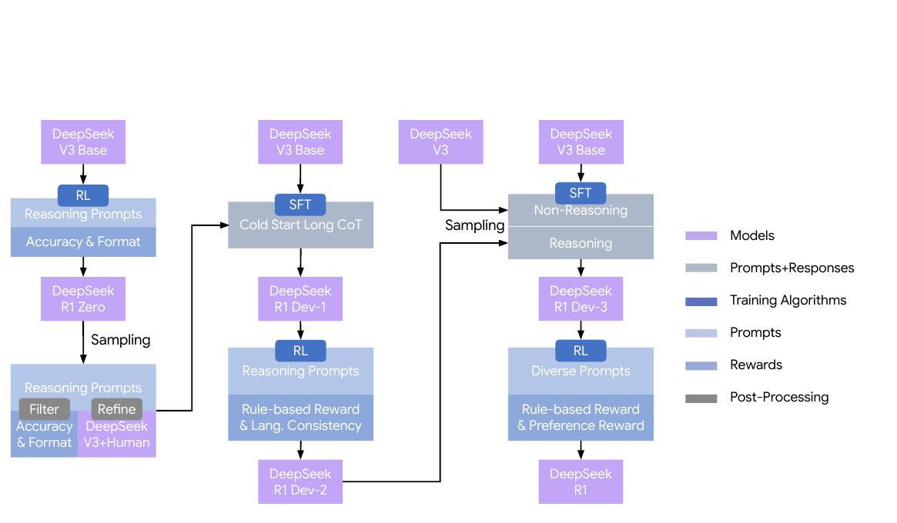
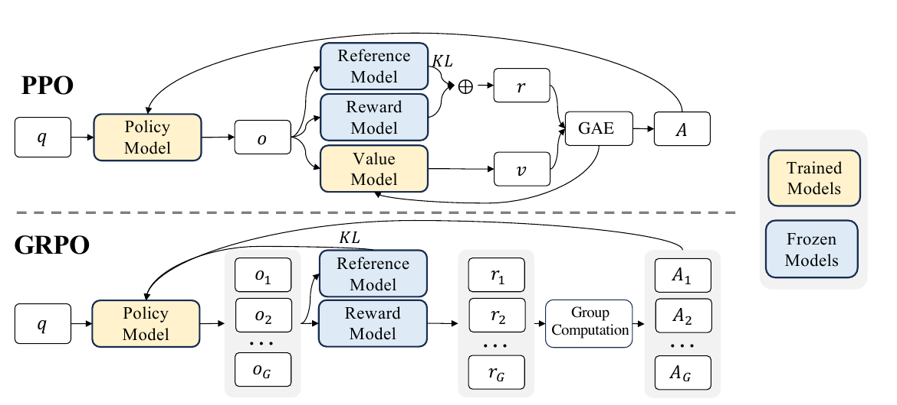
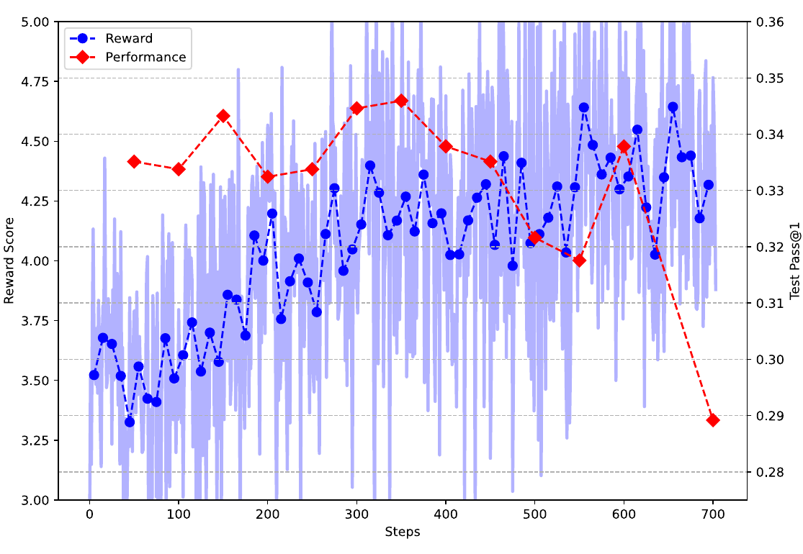
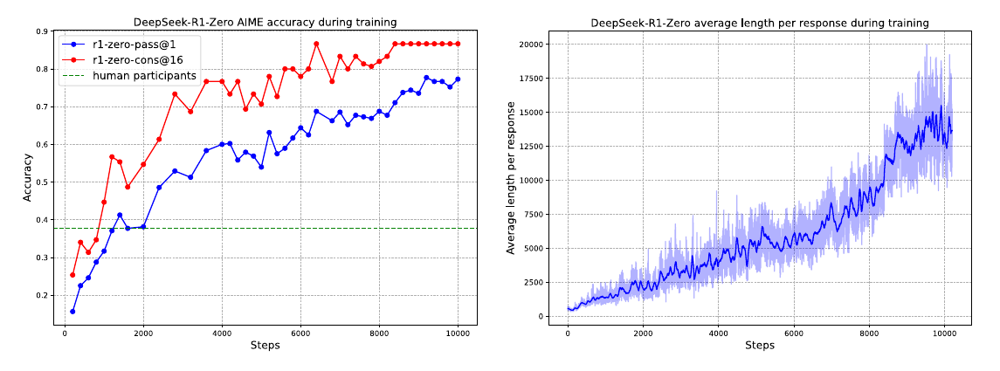
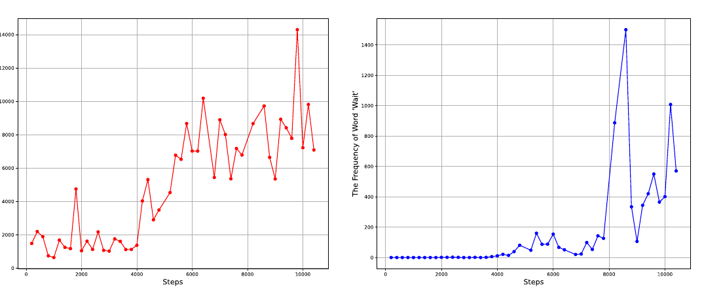
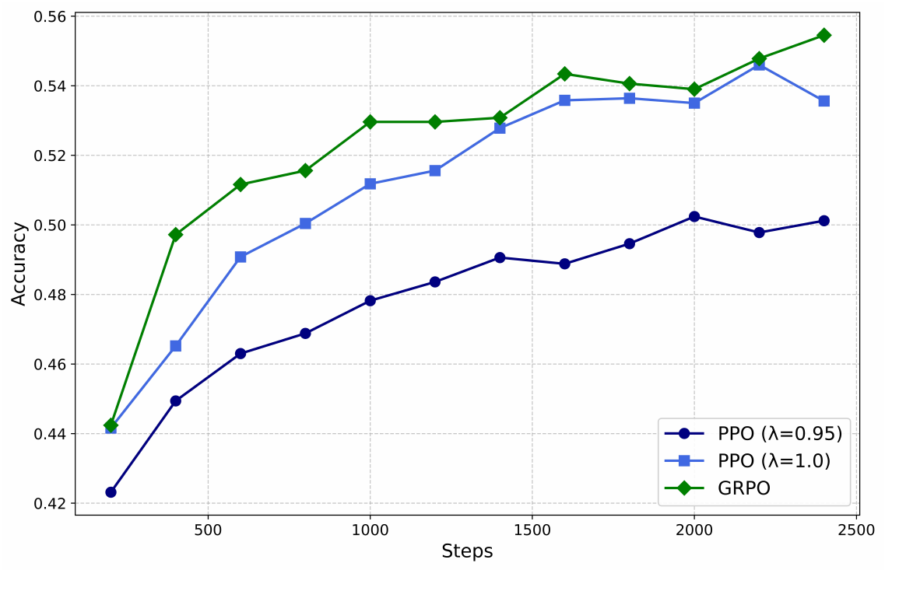

本文阅读 DeepSeek-AI 的 DeepSeek-R1: Incentivizing Reasoning Capability in LLMs via Reinforcement Learning（arXiv:2501.12948v2，2026 年 1 月 4 日）。论文的主角是两种后训练路线：DeepSeek-R1-Zero 从预训练模型直接接受强化学习，DeepSeek-R1 再把这种推理能力与监督微调、通用任务奖励结合。本文按论文提出问题、设计优化算法与奖励、观察训练结果的顺序展开；图表和数值来自原文，未重新训练或评测模型。
论文的训练问题与主要主张
论文要解决的是：能否不先给模型大量人工写好的推理过程，仅凭可核对的最终结果和强化学习，从预训练模型中激励出更有效的长链推理？ 传统后训练通常先做监督微调（supervised fine-tuning，SFT），让模型模仿“题目—示范解答”；再做强化学习（reinforcement learning，RL），依据奖励调整回答。作者认为，人工推理轨迹的制作难以扩展，示范还可能省略试错、验证与回溯，使模型被示范者的表达和解题习惯约束。论文称这种顾虑为 cognitive biases，但未给出它的操作性定义，也未单独量化偏差大小；这是实验动机，而非已经证明的因果结论。论文，§1、附录 A.2
这里的“从预训练模型直接做 RL”容易被读成“模型一开始只会预测下一个词”。预训练本身已使 DeepSeek-V3-Base 接触大量数学、代码和网页中的解题文本，因而有机会生成不同质量的候选答案。SFT 与 RL 都是后训练：SFT 提高给定示范的概率，RL 根据模型自己生成的结果与奖励调整概率。DeepSeek-R1-Zero 省去的是强化学习之前的 SFT，不是预训练；它也不意味着基座在预训练时从未见过人类或其他模型的推理文本。论文，§1、附录 A.1–A.2
作者的第一项回答是 R1-Zero：仅约束“先给推理、再给答案”的输出结构，用组相对策略优化（Group Relative Policy Optimization，GRPO）和可验证题目的规则奖励做大规模 RL。训练中，模型在数学、代码等任务上的表现提高，回答逐渐变长，还出现检查和改写既有步骤的文本。第二项回答是最终版 R1：R1-Zero 可读性与通用任务表现不足，于是作者重新加入少量冷启动 SFT、更多筛选后的 SFT，以及针对通用任务的奖励模型。两者回答的是相连但不同的问题：可验证推理能否靠 RL 激励；这种能力怎样变成可用的通用助手。论文，§2–3
R1-Zero 与 R1 的两条训练路线
论文图 2 把两条路线和中间检查点放在一张图里。左侧从 DeepSeek-V3-Base 经推理 RL 得到 R1-Zero；中间从 R1-Zero 采样、筛选和修整一小批长思维链（chain of thought，CoT），用它对 V3-Base 做冷启动 SFT 得到 Dev-1，再经推理 RL 得到 Dev-2；右侧把推理与非推理数据合并做第二次 SFT 得到 Dev-3，最后经混合任务 RL 得到 R1。GRPO 贯穿需要 RL 的阶段；奖励来源随任务和阶段变化。论文，图 2、§3


这张图也解释了论文中“跳过 SFT”与“后来又做 SFT”看似矛盾的说法：跳过前置 SFT 是 R1-Zero 的研究实验，最终 R1 没有坚持纯 RL。 冷启动数据只有数千条，主要改进可读性和语言一致性；Dev-2 后的拒绝采样保留判为正确的推理回答，形成约 60 万条推理 SFT 样本，再与约 20 万条写作、问答、翻译等非推理样本合并。某些不能直接按规则核对的推理样本，会在这次离线数据筛选中让 DeepSeek-V3 对照标准答案判定；这与把神经奖励模型放进推理 RL 循环是两个环节。论文，§3、附录 B.3.2–B.3.3
GRPO：把同题回答的奖励变成策略更新
策略模型、同题采样与期望
论文 §2.1 先规定：对一道问题 ，从旧策略 采样一组回答 ，再优化新策略 。策略模型就是正在生成回答的语言模型； 表示给定题目时生成回答 的概率，不是另一个专门负责“制定策略”的模型。 是生成这批样本时的参数快照， 是正在更新的参数；后文的参考模型 则用于限制策略偏移，三者作用不同。论文，§2.1
式（1）外层的 可按生成顺序阅读：先从训练题分布 取一道题，再在这道题的条件下让旧策略写 份回答，最后把不同题目、不同采样的目标值求平均。逗号连接的是有条件依赖的两次抽样，不是两项需要相加的期望。实际训练用有限批次估计这个平均；R1-Zero 每道题采样 份，每步使用 32 道不同题，因此一批有 512 份回答。论文，§2.1，式（1）与训练配置
对每份回答先有一个奖励 ，然后才能计算优势。近端策略优化（Proximal Policy Optimization，PPO）也用裁剪来限制策略更新；图 3 上方的 PPO 路线另用价值模型预测当前生成前缀的后续回报，并以广义优势估计（GAE）得到优势。下方的 GRPO 路线让同一道题的回答一起接受评分，再从组内分数直接计算优势。因此 GRPO 省去的是价值模型，不是奖励。论文，图 3、附录 A.3


组内优势与具体算例
论文式（3）把回答 的奖励与同组均值比较，再除以这组奖励的标准差：
减去 回答“这份解答比同题其他解答好还是差”；除以 使分数表示相对差异的大小。优势不是验证器的新评分，而是由原奖励算出的更新权重。 一个解释性构造是 、奖励 ：均值为 ，按总体标准差 计算，三份正确回答各得 ，错误回答得 。这个小组仅用于说明公式；论文实际使用 16 份回答。论文，§2.1，式（3）
这里有两个会影响理解的边界。第一，若同题回答的奖励全相同，论文写出的 为零，式（1）不能直接计算；原文没有交代实现怎样处理这一组，因此不能把某种平滑常数或跳过规则说成论文事实。第二，组内比较只告诉模型哪些已采出的回答更好；如果题目太难、样本全错，正确性奖励这一项就没有组内差异，格式奖励仍可能区分不同回答。这说明为何作者在结论中同时强调困难但可验证的题目、可靠验证器和足够计算资源。论文，§2.1、§6
概率比、裁剪与 KL 约束
有了 ，GRPO 还需决定策略应向这份回答移动多少。论文式（1）以新旧策略的概率比 衡量变化，核心项是
整个目标是对同题 份回答取平均，再对抽到的题和回答取期望。 表示新旧策略给这份回答相同概率； 时倾向提高它的概率， 时倾向压低它的概率。 规定一次更新中有利方向的裁剪范围， 控制当前策略偏离参考模型的 KL 惩罚。论文式（2）还给出按样本计算 KL 的估计：令 ，该项为 ；当两模型对该回答给出相同概率时 ，惩罚为零。论文，§2.1，式（1）–（2）
为什么“取到 1.2”之后梯度是零？ 用解释性数字 、：当 时，未裁剪项为 ，裁剪项为 ， 取 。只要 继续大于 ，这条样本的裁剪策略项保持常数 ，对 的局部导数就是零；并不是说模型总梯度为零，其他样本和 KL 项仍可能提供梯度。对 ，当 时， 同样选中常数项 ，阻止继续从这条样本获得压低概率的收益。这里的 仅为算例，论文另报告 R1 第一阶段 RL 的裁剪参数 ，不能把两个数当作同一次实验。论文，§2.1、§3.2.1
与 PPO 相比，GRPO 省去了通常与策略模型规模相近的价值模型。作者指出，长 CoT 会在后续步骤修正甚至推翻早期内容，价值模型仅看早期前缀时难预测最终奖励；作者所比较的 PPO 配置还把逐 token KL 惩罚加进累计奖励，可能给更长回答增加压力。附录图 4 的小模型实验显示，PPO 的 GAE 系数 时明显落后 GRPO，调至 后接近 GRPO。因此论文支持的是这组设置下的资源和调参优势，并未证明所有 PPO 训练最终都比 GRPO 差。论文，附录 A.3、图 4
奖励设计：不同任务使用不同裁判
R1-Zero 的规则奖励
论文 §2.2 紧接 GRPO 讨论奖励来源，这一节决定前面 到底从哪里来。R1-Zero 只在推理任务上使用可程序化核对的结果：数学题匹配指定格式中的答案，代码题用编译或测试用例检查；格式奖励要求按表 1 的 <think>…</think> 与 <answer>…</answer> 标签区分推理和答案。原文式（4）把准确性奖励与格式奖励等权相加：
这里有些读者会疑惑：“不用奖励模型”，强化学习靠什么更新？ 论文实际说的是避免把神经奖励模型用于 “to reasoning tasks”。数学答案匹配器、代码执行器、格式检查器依然输出奖励；原文在结论部分甚至称它们为 rule-based reward model。所以“有无奖励”“奖励是规则还是神经网络”“怎样用奖励更新策略”是三件事。GRPO 解决第三件事；式（3）解决第二件事；奖励从未消失。论文，§2.2、§6
STEM 通常指科学（Science）、技术（Technology）、工程（Engineering）与数学（Mathematics）。论文附录表 4 的 STEM 是训练数据中的一个更窄的类别：约 2.2 万道主要涉及物理、化学、生物的选择题，数学和代码另列。选择题可用正确选项给二值奖励；数学证明、开放式写作没有同样简单可靠的结果检查。规则奖励可用到哪里，决定了“纯 RL”实验能覆盖哪里。 作者拒绝在推理 RL 中使用结果型或过程型神经奖励模型，理由是长时间训练容易使策略找到模型评分的漏洞，还需重训奖励模型；但规则验证器也依赖答案、测试用例与解析器的正确性，并非天然不会被不完整测试利用。论文，§2.2、附录 B.3.1、表 4
R1 的语言一致性奖励
论文先报告 R1-Zero 的单条 CoT 有时混用英语和中文，随后在 R1 的第一阶段 RL 中加入语言一致性奖励。附录 A.1 说 V3-Base 的预训练文本以中英文为主，认为这可能是 R1-Zero 缺少语言一致性奖励时混语的原因；第 3.2.1 节把新奖励定义为 CoT 中目标语言词数占总词数的比例，并把它直接加到最终奖励。论文，§1、§3.2.1、附录 A.1
为什么 R1 的混语看上去比普通聊天模型明显？ 需要先校正对象：论文的突出例子是未做前置 SFT 的 R1-Zero；最终版 R1 用冷启动数据和语言奖励缓解中英混用，但作者仍报告它面对中英以外语言时可能以英文推理或回答。论文没有把 R1 与普通聊天模型做混语频率的受控对照。依据已报告的训练目标可以作一项有限推断：R1-Zero 的正确性与格式奖励不要求全程单语，长 CoT 又给语言切换更多出现位置，因此能拿高分的混语轨迹不会因混语本身被扣分。普通聊天助手若接受单语示范或语言偏好训练，行为可能不同；这不是本文直接测得的比较。论文，§1、§3.2.1、§6

图 7 支持作者的具体取舍：语言奖励改善可读性，在这个小模型消融里数学成绩大体相近、代码成绩略降。图不能证明“混语本身提升了推理”；也不能用它断言模型内部先用哪种语言“思考”。论文只检查可见 token 序列的语言比例与任务得分。论文，附录 B.6
R1 的有用性与安全奖励模型
这里有些读者会疑惑：前文说推理任务不用神经奖励模型，为什么 §3.1 又训练有用性奖励模型？ 原文的两个限定在相邻章节里：§2.2 排除神经奖励模型的对象是 推理任务；§3.1 开头则说 “For general data, we resort to reward models”。写作、开放式问答等通用任务缺少确定答案，R1 为此训练有用性和安全两种神经奖励模型。第二阶段 RL 按问题类型分流：推理题继续用规则奖励，通用题使用相应偏好模型与格式奖励，语言一致性奖励可加到两类问题上；一条通用问题归入有用性或安全数据中的一类，并非每次同时取得两种模型分数。论文，§2.2、§3.1–3.2.2
有用性奖励模型的训练数据还涉及 DeepSeek-V3。论文写每个偏好对包含一个问题和 A、B 两份候选回答，接着明确说 “we query DeepSeek-V3 four times”：让 V3 评判同一对回答四次，每次随机交换 A/B 位置以减轻位置偏差，平均判断后筛出差异足够大的约 6.6 万对，用这些偏好对训练带标量奖励头的模型。附录 B.2 的 Arena-Hard 提示让 V3 比较两名助手的回答并输出偏好标签，因此四次查询明确属于评判。至于 A、B 候选到底用何种温度、是否由相同模型独立采样，正文没有给出足够信息；R1 第二阶段 RL rollout 的温度 不能倒推成这批偏好对的生成温度。论文，§3.1、附录 B.2
安全奖励模型另用约 10.6 万条按安全准则标注的样本，学习对单条回答作安全或不安全的点式判断。作者把通用指令数据与模型偏好奖励限制在最终 RL 的 1,700 步中的最后 400 步，因为更长时间优化模型给出的分数可能导致奖励攻击：模型学会让裁判给高分，外部任务质量却下降。论文，§3.1–3.2.2


图 6 回答了“为何不把神经模型奖励直接扩大到所有推理题”：若训练目标只是让一个可被查询的评判模型加分，策略可能适应该评判模型的偏差。图中 Codeforces 只是用于观察外部表现的测试，不能据此断言所有神经奖励模型必然产生相同程度的下降；规则验证器若覆盖不足，也仍可能被利用。论文，附录 B.5、§6
实验如何支持这些主张
论文图 1 同时画出 R1-Zero 训练中的 AIME 2024 准确率与平均回答长度。左图蓝线是单次回答的 Pass@1，从初期 15.6% 升至 77.9%；红线是同题 16 条回答多数表决的 Cons@16，最终约 86.7%，两种指标不能混用。右图回答长度总体上升，第 8,200 步后最大允许长度从 32,768 提到 65,536 token，也影响后段长度曲线。图支持“准确率与输出长度在这次训练中一起增长”，不能单凭相关曲线证明“越长必然越正确”。论文，§2.1–2.3、图 1


论文表 2 展示一条中途以 “Wait, wait” 重新检查前面推导的回答，并用 using an anthropomorphic tone 描述它的语气。为什么模型会说“这是一个 aha moment”？ 这是一段生成文本，不是模型对自身认知状态的测量；作者真正可核对的观察是输出中出现回看、改写，以及附录图 9 中反思词和 “wait” 使用频率随训练增加。它们说明某类文本轨迹变多，但没有隔离实验表明这个词本身导致答案正确。论文，§2.3、表 2、附录 C.2


R1 的阶段结果则能检验“加回 SFT 与通用奖励是为了什么”。下表选自论文表 3；AIME 2024 和 LiveCodeBench 是 Pass@1，IF-Eval 是严格提示遵循率，单位均为百分比。LiveCodeBench 使用 CoT 格式、题目收集于 2024 年 8 月至 2025 年 1 月。原文 Pass@1 通过多次采样取平均，AIME 每题 64 条、LiveCodeBench 每题 8 条，与 GRPO 训练时每题 16 条是不同配置。论文，表 3、附录 D.1
| 模型阶段 | AIME 2024 | LiveCodeBench | IF-Eval |
|---|---|---|---|
| R1-Zero | 77.9 | 50.0 | 46.6 |
| Dev-1：冷启动 SFT 后 | 59.0 | 57.5 | 71.7 |
| Dev-2：第一阶段 RL 后 | 74.0 | 63.5 | 72.0 |
| Dev-3：第二次 SFT 后 | 78.1 | 64.6 | 78.1 |
| R1：最终 RL 后 | 79.8 | 65.9 | 83.3 |
Dev-1 比 R1-Zero 更遵循指令，但 AIME 降低；随后的推理 RL 恢复部分数学能力并提升代码成绩；后续 SFT 与混合任务 RL 继续提高提示遵循率。这与各阶段目标相符，但每次阶段切换也改变了数据与训练方式，不能把某一列的变化只归于单独一种奖励。作者没有用这张表独立量化“人工示范的认知偏差”。论文，§4、表 3


局限与结论
这篇论文最清晰的证据链是：预训练基座能生成候选解答 → 可验证结果与格式提供奖励 → GRPO 强化同题较好的回答 → R1-Zero 在一组推理基准上进步。最终 R1 说明产品化还需要修正语言、可读性和通用任务能力，因而再次使用 SFT 和神经偏好奖励。论文的纯 RL 结论主要适用于可可靠核对结果的任务；开放式任务的奖励模型可能被利用，语言控制也带来取舍。论文，§2–4、§6
几项边界直接影响结论的外推：论文没有报告 R1-Zero 与普通聊天模型的混语受控比较；式（3）未交代组内奖励方差为零时的实现；有用性偏好对的候选采样与标签到筛选阈值的映射不足以独立复现；反思词频只能表明文本行为变化。图 6 又说明神经评判分数与外部质量可能背离。报告中的数值均为作者实验，本文没有复现训练或独立验证这些因果解释。论文，§2.1、§3.1、附录 B.5–B.6、C.2
延伸问答
问：大模型生成时怎样选择输出语言？不同语言要分别训练一套模型吗？
答：对一般多语言自回归模型，提示和已生成前缀共同决定下一 token 的概率分布，语言通常没有一个独立的“开关”；同一套模型参数与分词器可以处理多种语言。某次输出为何切换语言，可能与提示语言、前缀、训练数据和后训练奖励有关。本文只报告 R1 系列的混语现象及语言奖励，没有分析逐 token 的语言选择机制；这些是通用生成机制的解释，不应写成论文实验结论。
问：词表越大，同样文本就一定需要更少 token 吗？
答：词表大小 是可用 token 类别的数量；同样文本实际切成的 token 数 是另一项指标。扩大 只给分词器更多可用条目，是否让某种语言的 下降，取决于哪些文本用于学习分词规则、哪些片段获得合并。 增大还会增加嵌入和输出层的规模； 下降才直接缩短模型要处理的序列。比较两种分词器时应在同一文本上实际编码并统计 ，不能从 单独推出速度或语言能力。DeepSeek-R1 论文没有研究这个权衡。
问：模型能用中文回答，是否证明词表有完整中文词条？遇到生僻语言会怎样？
答：能输出中文只能证明分词器可以把中文表示成 token 序列；有些分词器即使缺少常用整词条目，也能拆成字符或字节片段。回答质量还取决于该语言的训练数据、后训练示范与任务形式。对低资源语言，模型可能表达不流畅、切换到高资源语言、给出错误内容，或说明能力有限；没有一个由“词表里是否有整词”单独决定的统一反应。论文只把中英之外语言的表现列为 R1 的限制，没有做稀有语言或词表对照实验。论文，§6
问：如果模型被放进 Agent，能否自动调用翻译工具处理生僻语言？
答：这取决于应用是否提供翻译工具、模型是否有调用权限，以及系统是否让它识别何时需要翻译。工具链可以把输入翻译到模型更擅长的语言，再把输出译回目标语言；翻译错误也会传递到后续推理。论文把搜索、编译器等工具增强推理列为未来方向，没有验证 R1 会自主调用翻译服务。论文，§6